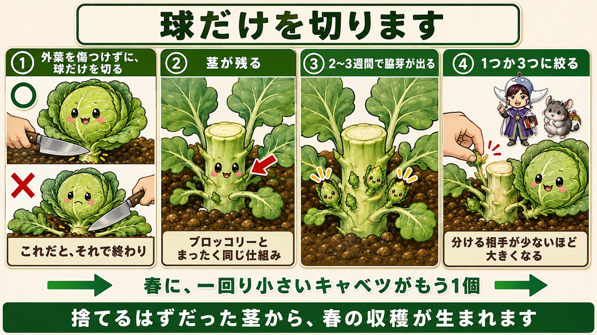
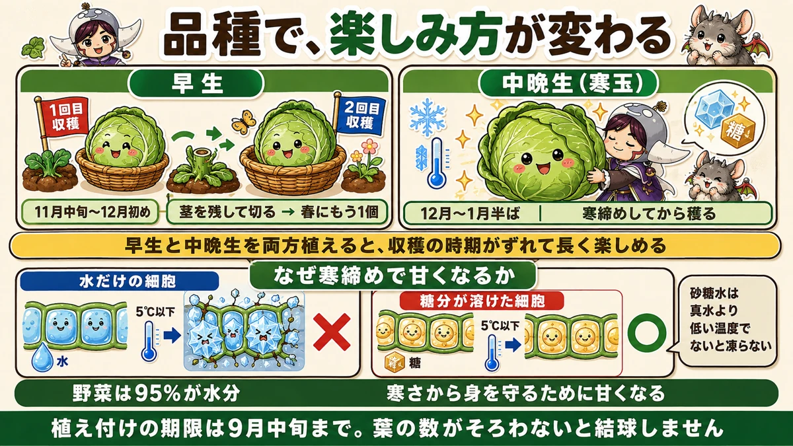
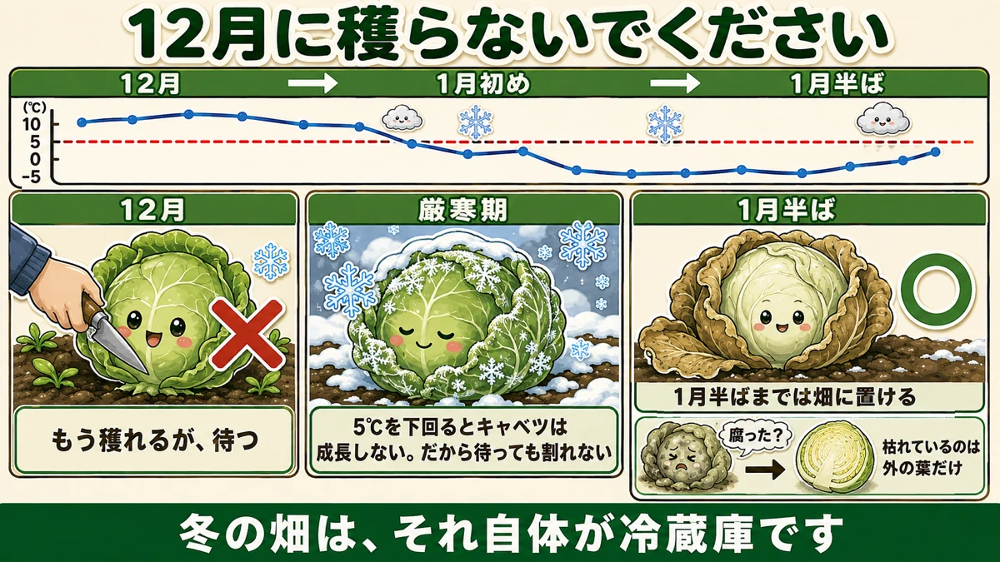

Leave the stem and you get a second cabbage 🥬 Plus: don't cut the late ones early

🥬 "One plant, one cabbage. I assumed that was that."
🥬 "Should I cut it now or wait?"
🥬 "The outer leaves are dying back — is it rotting?"
Hello, I'm Eiko. Eight years of growing vegetables organically and without pesticides, and a teaching licence in science.
The headline:
Change how you cut a cabbage and you get a second one in spring.
Two harvests from one plant, with no special tools and no extra fertiliser.
Leave the stem

What this diagram says （図解の文字）
- Cut only the head
- ① ○ "cut just the head, without damaging the outer leaves" ／ ✗ "do it this way and that's the end of it"
- ② "the stem remains" — "exactly the same mechanism as broccoli"
- ③ "side shoots appear in 2–3 weeks"
- ④ "reduce to one or three" — "fewer to share with, bigger each"
The usual way ends it
Most people cut a cabbage straight through at the base, taking everything. Nothing wrong with that — but that's the end of that plant.
Cut only the part you eat
Cut the head away from the stem, and nothing else.
One point matters: don't damage the outer leaves around it. There are plenty of them; leave them in place and slip the head out from the middle. That's the whole knack.
Which leaves you a stem
Look at the ground afterwards: a short stem is still standing, and it has several leaf joints on it.
Exactly the same mechanism as broccoli
Broccoli, after you cut the main head, throws side shoots one after another. Cabbage does precisely the same thing. The stem is short, but side shoots come from the leaf joints.
Three or four of them
Leave it and shoots appear within two or three weeks, and three or four small cabbages start forming.
Reduce to one, or three
Grow them all and they all stay small. Reduce to one, or about three. Same principle as removing potato shoots: the fewer there are to share, the bigger each one gets.
A second cabbage in spring
Thinned like that, you get another cabbage in spring, a size or two smaller than the first. It won't match the original.
But two harvests from one plant is a real gain — from a stem you were going to throw away.
Early and late varieties

What this diagram says （図解の文字）
- The variety changes how you use it
- Early — first harvest — "cut leaving the stem → another one in spring"
- Mid-late (the cold-weather type) — "harvest after it has been through the cold"
- "Plant both and the harvests are staggered, so the season lasts longer"
- Early varieties — harvested in late autumn. These suit the leave-the-stem method, because there's time before spring for side shoots to grow
- Mid-late varieties — harvested in midwinter. These have a different trick
Don't cut the late ones early

What this diagram says （図解の文字）
- Don't cut it in December
- December → early January → mid-January, against a temperature scale of 10 / 5 / 0 / −5 °C
- ✗ "December: it's ready, but wait"
- "Below 5 °C a cabbage doesn't grow — which is why waiting doesn't split it"
- ○ "you can leave it in the ground until mid-January"
It has reached full size and the cold is setting in. Don't cut it.
Let it go through the coldest part of winter and it tastes far better.
It won't split
"Won't it split if I wait?" No.
Below 5 °C (41 °F) a cabbage stops growing. Growth stopped means no force pushing outward from inside — so it doesn't split. The cold is doing the storage for you.
Dying outer leaves are fine
The outer leaves go brown and change colour, and it looks like rot starting. I thought so at first too.
It's only the outer leaves. Peel one off and there's a perfectly clean cabbage inside.
It keeps until midwinter
You can leave it in the ground until about mid-January. A winter plot is a refrigerator in itself — and for cabbage, leaving it there is the best storage there is.
Why cold makes it better
Water starts to freeze below 5 °C, and a vegetable is about 95 % water.
If the water inside a cell freezes, ice crystals destroy the cell and that part dies. For the plant this is a matter of survival.
So the plant does something about it: it dissolves sugar into that water so it freezes less readily. Sugar solution needs a lower temperature to freeze — the same principle as salting a road.
It sweetens in order to survive the cold, and we help ourselves. Waiting on a late cabbage is simply using that mechanism.
Do both
My recommendation: plant an early variety and a late one.
- Early — cut in late autumn, leave the stem → another in spring
- Late — wait through the cold → cut it sweetened
The harvests are staggered, so the season stretches.
The first month after planting
None of the above happens unless the plant gets through its first month. Lose it here and you get neither harvest.
Choose a plant with upright leaves
- Leaves standing up crisply — avoid anything lying flat
- No insect holes
- The central growing point intact, with nothing on it
About five true leaves is ideal. An over-large plant may be pot-bound.
Planting
- Water the pot well half an hour before planting
- Cut the hole in the mulch film
- Set it so the surface of its compost is level with the mulch
- If it sits a centimetre proud, press it down as you settle it
Set too low, rainwater collects and the roots rot. Keep the level right.
Net it the same day
Put the insect netting on the day you plant. Leave it a single day and butterflies lay on it.
Bury the hem in soil. Just laying it over achieves nothing — and burying it also stops the wind taking it.
Mulch film scorches the leaves
While it's still warm, the surface of mulch film gets too hot to touch in direct sun. A lower leaf drooping onto it is scorched and dies.
Easily fixed:
- Put a little soil between the leaves and the film
- Straw or cut weeds do just as well
It also blocks the hot air coming up out of the planting hole.
Mostly, don't water
With mulch film on, watering is rarely needed. Only if:
- The leaves are curling inward
- The whole plant has flopped
Containers are different — water as soon as they dry.
Feed and draw soil up together
First feed two weeks after planting, then monthly.
- 20 cm (8 in) out from the stem — 25–30 cm once the plant is large
- Make a hole 10–15 cm (4–6 in) deep with a trowel
- One tablespoon (about 30 ml) of poultry manure, in two holes either side
- Pour water in before filling it back — it works faster that way
Without mulch film, scatter it in a circle 20–25 cm out and cover it by drawing soil up.
Drawing soil up at the same time as feeding is efficient. It gets air into the soil so the feed works, and it stops the plant rocking in strong wind.
Look under the leaves for pests
Eggs are laid on the undersides. Looking at the tops finds nothing.
- Cut off dying lower leaves to improve airflow
- Leave the ladybirds alone — they eat the aphids
To sum up
- ✅ Cut only the head, off the stem, and you get another cabbage in spring
- ✅ Don't damage the outer leaves
- ✅ The same mechanism as broccoli — side shoots from the leaf joints
- ✅ Shoots in 2–3 weeks; reduce to one or three
- ✅ Early varieties suit the stem method; late ones suit waiting
- ✅ Don't cut a late cabbage early. Below 5 °C it stops growing, so it won't split
- ✅ Dying outer leaves are fine — peel one off
- ✅ A winter plot is a refrigerator
- ✅ Sugar is antifreeze. It sweetens to survive
- ✅ First month: net it the same day, keep leaves off the film, feed at two weeks
You don't have to do all of it. This year, try cutting just the head on one plant. In two or three weeks, shoots come out of the stem 🥬
Thank you for reading!